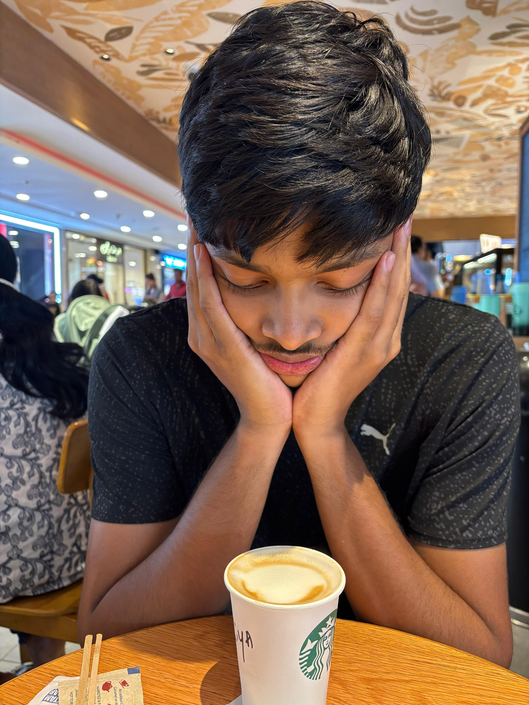

Economics · Madras School of Economics
I work on financial econometrics and macrofinance. Heading to the Barcelona School of Economics for an MSc this autumn.
Download CVFinal-year economics student at the Madras School of Economics. I'm drawn to how global shocks move through markets — exchange rates, equities, international finance.
Curious by default. I learn by building things and following questions until they make sense.
How international shocks transmit to the Nifty 50 — OLS and 2SLS estimation, jump and contagion detection, crisis-period interactions.
Read the paper →Estimating the effect of rainfall variation on farm wages, with attention to omitted-variable bias across pooled and fixed-effects specifications.
Read the paper →